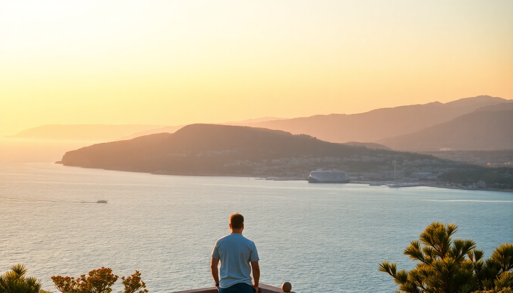

Best Day Trips from Heraklion: Knossos, Elounda & Lasithi

I spent a week based in Heraklion and quickly realized the city itself is just the launchpad. The real magic of Crete lies an hour or two in any direction. After sorting through rental car queues, bus schedules, and a few overpriced guided tours, I found three day trips that actually deliver without wasting your afternoon in traffic. Here’s what worked, what didn’t, and exactly how to pull them off.
Is Knossos Palace worth the hype, or just a tourist trap?
Knossos is crowded, dusty, and parts of it look like a 1950s theme park reconstruction. That said, it’s still the only Bronze Age palace you can walk through with half its walls standing. Go early—I mean, be at the ticket booth by 8:00 AM—or you’ll spend the whole time dodging selfie sticks.
- Knossos Palace — Arrive before 8:30 AM to avoid the bus crowds from Rethymno. The site opens at 8:00, and the first hour is blissfully quiet.
- Heraklion Archaeological Museum — Skip the palace audio guide and instead visit this museum first. The actual frescoes and artifacts are here, not at the site. Allow 90 minutes.
- Royal Road & North Entrance — Most people miss this part. Walk past the main courtyard toward the north; you’ll find the original paving stones and the famous bull-leaping fresco replica in its original position.
- Cafe Knossos — Overpriced instant coffee. Walk five minutes down Knossos Street to Katsamba for a proper freddo espresso and a cheese pie.
I found the whole experience worth exactly two hours. If you’re short on time, just do the museum and skip the palace grounds—you’ll see the same stuff in better condition.
How do you reach Elounda without renting a car?
Elounda is a fishing town turned luxury resort enclave, but the real draw is Spinalonga island—the former leper colony. Public buses from Heraklion’s central station run hourly, cost about €8 each way, and drop you right at the Elounda waterfront. The ride takes 90 minutes.
- KTEL Bus from Heraklion — Depart from the bus station near the port. Look for the “Agios Nikolaos” route and get off at Elounda. Buses run 6:00 AM to 8:00 PM.
- Spinalonga boat from Elounda harbor — Multiple operators offer round trips for €10–12. I used Petrakis Boats; they leave every 30 minutes and include a 45-minute stop on the island.
- Plaka — Skip the tourist restaurants on Elounda’s main strip. Walk 15 minutes north to Plaka village and eat at Taverna Plakias for grilled octopus and dakos salad. Half the price, double the view.
- Elounda Beach — Not worth the sunbeds. Instead, walk to Kolokitha Beach, a 20-minute coastal path from town. It’s rocky but nearly empty on weekdays.
The spinalonga tour itself is sobering—the abandoned hospital buildings and church are haunting. I’d budget four hours total for the Elounda trip, including lunch in Plaka.
What’s the best route across the Lasithi Plateau?
The Lasithi Plateau feels like another planet—a flat green bowl ringed by mountains, dotted with white windmills that no longer turn. You need a car for this one. The drive from Heraklion takes about an hour via the E75 toward Neapoli, then a winding road up into the plateau.
- Dikteon Cave — Said to be Zeus’s birthplace. The entrance fee is €6, and it’s a steep 20-minute uphill walk from the parking lot. Wear proper shoes; the cave floor is slippery.
- Psychro village — The gateway to Dikteon Cave. Stop at Taverna To Kafeneio for lamb in lemon sauce and homemade fries. The owner grows his own oregano.
- Windmills of Lasithi — Most are derelict, but a handful near Agios Georgios have been restored. Pull over for photos, but don’t trespass on private farmland.
- Kera Kardiotissa Monastery — A 14th-century nunnery on the eastern edge of the plateau. The frescoes are faded but genuine, and the courtyard is silent. No entrance fee, but cover your shoulders.
- Tzermiado — The largest town on the plateau. The Lasithi Folklore Museum here has a tiny collection of old weaving looms and farming tools. It’s quirky, not polished.
I recommend starting early (8:00 AM from Heraklion), hitting the cave first before the tour buses, then looping around the plateau counterclockwise back toward Neapoli. Total drive time with stops: about five hours.
Should you combine Knossos with a Heraklion city tour?
Don’t do it. Every agency in Heraklion sells a “Knossos + City Tour” combo that crams both into a half-day. You’ll spend more time listening to a guide talk about the Minoan water system than actually seeing anything.
- Heraklion City walk — Do this on your own. Start at Lion’s Square (Morosini Fountain), walk down Daidalou Street for shopping, then hit the Heraklion Market (Agora) for cheese and olives.
- Rocca a Mare fortress — The Venetian harbor fort costs €4 and offers a decent view of the port. It takes 20 minutes to walk the ramparts.
- Bougatsa Iordanis — On Handakos Street for the best bougatsa in town. Cream-filled phyllo with cinnamon and sugar. Get one to go and eat it on the harbor wall.
- Historical Museum of Crete — Smaller and quieter than the archaeological museum. I liked the room dedicated to Nikos Kazantzakis, complete with his writing desk.
A proper Heraklion day is morning at the Archaeological Museum, lunch at Peskesi (traditional Cretan cuisine, book ahead), then a slow afternoon at the fortress and market. Save Knossos for a separate morning.
When is the worst time to visit these sites?
July and August. The heat is brutal, the cruise ship crowds are suffocating, and prices double. If you can only go in summer, start every outing by 7:30 AM and be back in Heraklion by 1:00 PM for a siesta.
- April–May — Ideal. Wildflowers on the Lasithi Plateau, empty beaches at Elounda, and Knossos is pleasant. Most sites open full hours by mid-April.
- September–October — Second best. Sea is still warm, crowds thin after mid-September, and the olive harvest starts.
- November–March — Many tavernas and some cave sites close or reduce hours. Knossos stays open but can be muddy. Spinalonga boats run on weather.
I went in late May and had Knossos nearly to myself by 8:15 AM. By 10:00, the tour groups from two cruise ships had arrived. Plan accordingly.
FAQ
Can you visit Knossos and Lasithi in the same day? Technically yes, but I wouldn’t. Knossos needs 2–3 hours minimum, the drive to Lasithi is another hour each way, and you’ll want 3–4 hours on the plateau. That’s a long day with too much driving. Pick one or the other.
Is Elounda worth it if you don’t do the Spinalonga boat tour? Not really. The town itself is a strip of hotels and souvenir shops. The beach is mediocre. Spinalonga is the reason to go. If you skip the boat, you’re better off spending the day in Agios Nikolaos instead.
Do you need a guide for Knossos, or can you self-guide? Self-guide is fine if you read the information panels. The site layout is straightforward. If you want context, rent the audio guide (€5 at the entrance) rather than paying €40 for a private guide. The audio is dry but accurate.
Conclusion
- Knossos is worth exactly one early morning. Pair it with the Archaeological Museum in Heraklion for context.
- Elounda is all about Spinalonga. Go by public bus, eat in Plaka, skip the resort restaurants.
- Lasithi requires a rental car. Start at Dikteon Cave, then loop through Psychro and Tzermiado.
- Avoid June through August if you can. May and September are the sweet spots.
- Don’t combine multiple sites in one day. Each trip deserves its own morning.